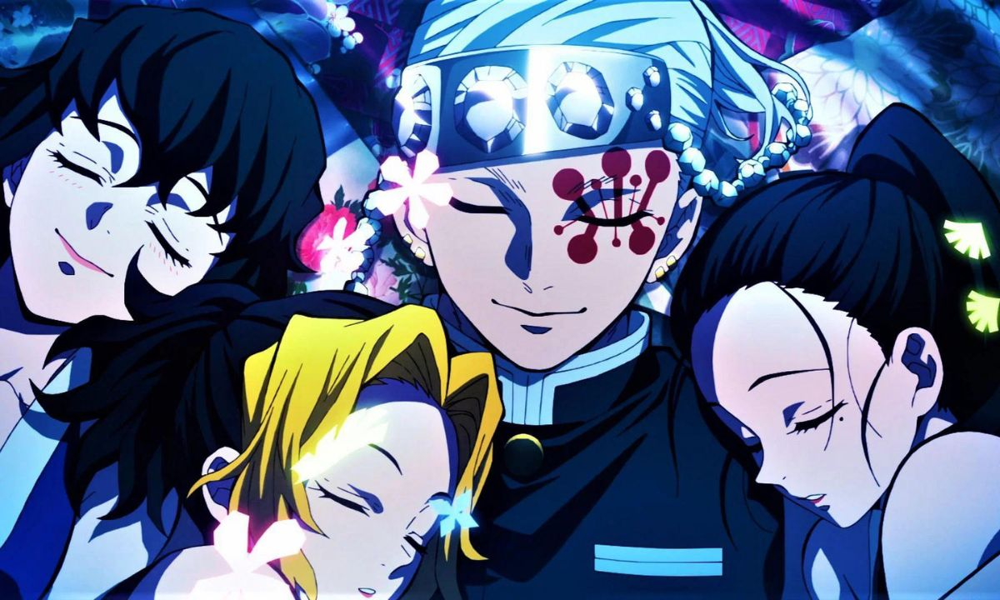
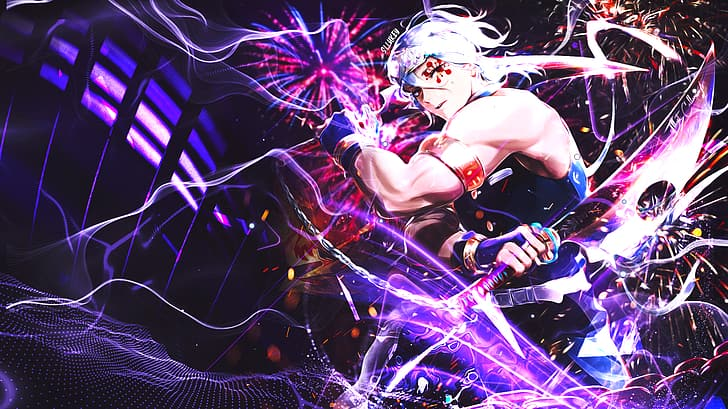
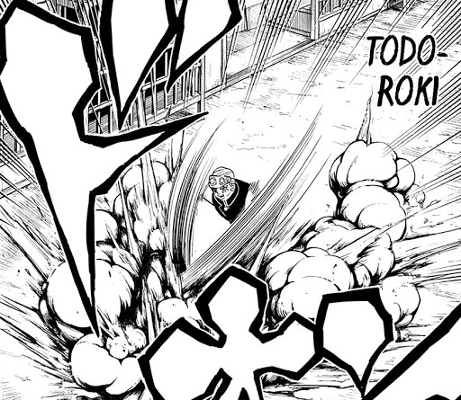
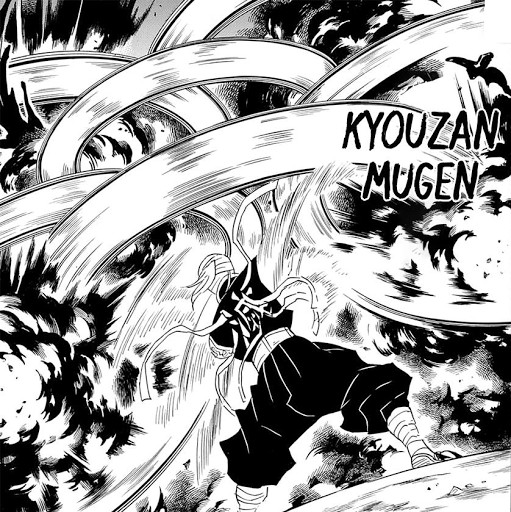
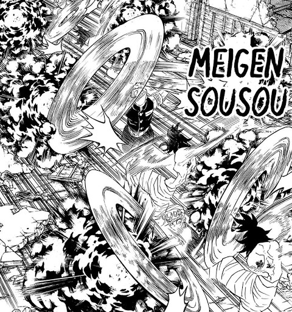

Tengen Uzui
História
Tengen nasceu em uma família de nove filhos dentro de um clã shinobi. Três das nove crianças morreram antes mesmo de atingirem os 10 anos de idade devido ao treinamento em excesso. Com os seis irmãos restantes, eles foram forçados a matar uns aos outros por ordem de seu pai sem que eles soubessem contra quem lutou, já que suas cabeças e rostos estavam cobertos por máscaras.
Tengen percebeu o truque de seu pai somente depois de matar dois de seus irmãos. Aos 15 anos, sete de seus irmãos já haviam morrido, deixando apenas ele e seu irmão mais novo. Quando crianças, seu pai os forçou a passar por um treinamento severo e intensivo como uma tentativa de salvar o clã, e os influenciou a acreditar que eles precisavam dispor vidas inocentes em seu benefício, e apenas ter uma esposa como meio de produzir filhos. Como seu último irmão restante adotou essa mentalidade, e não se sentiu mal por matar seus outros irmãos, Tengen ficou chocado e decidiu deixar o clã permanentemente. Ele deixou a aldeia com suas esposas sem lutar contra seu irmão.
A família de Uzui pratica a poligamia, então quando Tengen completou 15 anos, ele teve 3 esposas, que foram escolhidas pelo chefe do clã. Depois de deixar a aldeia com suas esposas, ele mais tarde as ensinaria a se valorizarem antes da missão, indo contra seus ensinamentos como kunoichi. Por um tempo depois que ele deixou o clã, tornou-se hábito para ele dizer ele estava indo para o inferno, mas parou depois que Makio ficou com raiva dele, Hinatsuri chorou e Suma o mordeu. Ele ficou angustiado sobre se deveria ter exterminado o clã Uzui, mas não conseguiu matar seu pai ou irmão.
Tengen percebeu o truque de seu pai somente depois de matar dois de seus irmãos. Aos 15 anos, sete de seus irmãos já haviam morrido, deixando apenas ele e seu irmão mais novo. Quando crianças, seu pai os forçou a passar por um treinamento severo e intensivo como uma tentativa de salvar o clã, e os influenciou a acreditar que eles precisavam dispor vidas inocentes em seu benefício, e apenas ter uma esposa como meio de produzir filhos. Como seu último irmão restante adotou essa mentalidade, e não se sentiu mal por matar seus outros irmãos, Tengen ficou chocado e decidiu deixar o clã permanentemente. Ele deixou a aldeia com suas esposas sem lutar contra seu irmão.
A família de Uzui pratica a poligamia, então quando Tengen completou 15 anos, ele teve 3 esposas, que foram escolhidas pelo chefe do clã. Depois de deixar a aldeia com suas esposas, ele mais tarde as ensinaria a se valorizarem antes da missão, indo contra seus ensinamentos como kunoichi. Por um tempo depois que ele deixou o clã, tornou-se hábito para ele dizer ele estava indo para o inferno, mas parou depois que Makio ficou com raiva dele, Hinatsuri chorou e Suma o mordeu. Ele ficou angustiado sobre se deveria ter exterminado o clã Uzui, mas não conseguiu matar seu pai ou irmão.

habilidades
Tengen demonstrou habilidades fora do normal, como uma força descomunal e agilidade incomparável. Isso se deve ao árduo treinamento que teve desde sua infância e também aos grandes músculos que possui, os quais foram muito úteis em sua batalha. Com essa força, Uzui mostrou ser muito útil mesmo com o braço cortado, além da incrível agilidade com as lâminas e força para manusear ambas, tendo em vista que até aumentou a velocidade e capacidade de seus ataques apenas segurando-as com a ponta de dois dedos. Além disso, o personagem apresenta ter ótimos ouvidos, os quais foram muito úteis em sua batalha contra Daki, pois conseguiu localizá-la mesmo estando muito longe e em uma caverna; essa habilidade é bem semelhante às capacidades de Zenitsu, porém bem mais avançada, inclusive Uzui utiliza uma respiração que é uma ramificação da Respiração do Raio, sendo esta a Respiração do Som, o qual utiliza diversas formas e é exclusiva do Pilar do Som. Assim como Zenitsu, Tengen abusa de sua capacidade sonora para prever diversos movimentos dos inimigos e evitá-los, inclusive sua respiração toda se baseia nisso, pois graças a ela consegue envolver ataques bem mais avançados. Estas técnicas em questão foram apresentadas em cinco formas, mas duas delas não foram mostradas na obra.

Respiração do Som
A Respiração do Som é uma das formas de ataque em Kimetsu no Yaiba - Demon Slayer. Usada pelo hashira Tengen Uzui, ela só pode ser usada por dele devido ao tipo especial de Lâminas Nichirin que ele possui, que são mais largas do que o normal.
Esta respiração é derivada da respiração do Trovão, que por sua vez é derivada da respiração do Sol.
No post de hoje, nós trazemos todas as formas desta respiração, assim como a descrição dos ataques dela.
Esta respiração é derivada da respiração do Trovão, que por sua vez é derivada da respiração do Sol.
No post de hoje, nós trazemos todas as formas desta respiração, assim como a descrição dos ataques dela.
Primeira Forma: Rugido ( Ichi no kata: Todoroki)
Uzui levanta suas espadas gêmeas acima da cabeça dele e então usa um golpe vertical com força para baixo, enquanto simultaneamente cria uma explosão com as bombas dele, causando um estrondo alto que lembra um trovão.
Quarta Forma: Cortes Ressoantes Constantes (Shi no kata: Kyōzan Muken)

Uzui usa suas espadas separadas e gira elas rapidamente, enquanto arremessa as bombas dele, fazendo dessa forma uma técnica que tanto ataca quanto defende.
Quinta Forma: Performance de Cordas (Go no kata: Meigen Sōsō)

Uzui levanta uma das suas Lâminas Nichirin com o cabo ao contrário e então gira a outra usando a corrente que conecta elas.
Ele une a isso o lançamento de diversas bombas. Esta técnica é tão poderosa que conseguiu sobrepujar-se até mesmo a uma Lua Superior.
Ele une a isso o lançamento de diversas bombas. Esta técnica é tão poderosa que conseguiu sobrepujar-se até mesmo a uma Lua Superior.